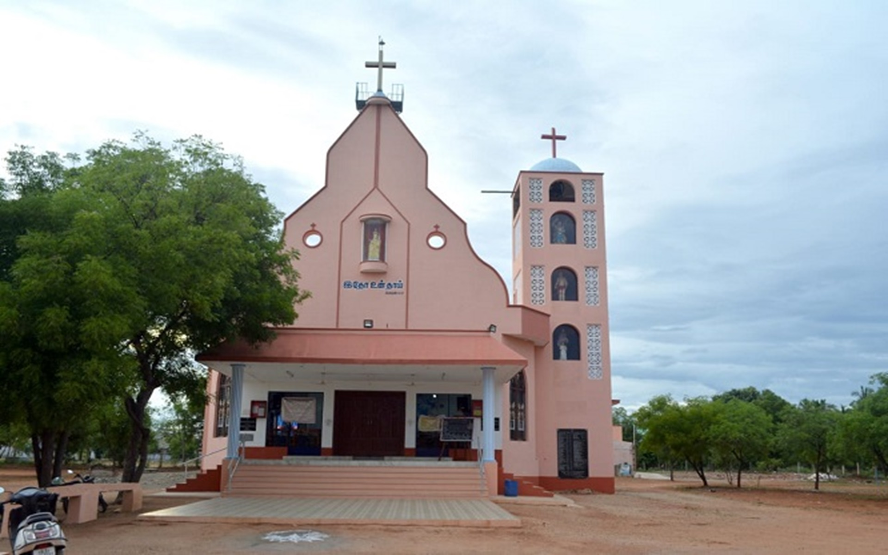

<!DOCTYPE php>
 <php lang="en">
	 <head>
		 <meta charset="utf-8" />
		 <meta name="viewport" content="width=device-width, initial-scale=1.0" />
		 <meta name="description" content="Interior-Design-Responsive-Website-Templates-Edge" />
		 <meta name="author" content="webThemez.com" />
		 <title>மரியானூஸ் நகர் : பங்குப்பேரவை </title>
		 <link rel="favicon" href="../assets/images/favicon.png" />
		 <link rel="stylesheet" media="screen" href="../../fonts.googleapis.com/css_c5f925f2.css" />
		 <link rel="stylesheet" href="bootstrap.min.css" />
		 <link rel="stylesheet" href="../assets/css/font-awesome.min.css" />
		 <!-- Custom styles for our template -->
		 <link rel="stylesheet" href="../assets/css/bootstrap-theme.css" media="screen" />
		 <link rel="stylesheet" href="style.css" />
	 </head>
	 <body>
		 <!-- Fixed navbar -->
		 <div class="navbar navbar-inverse">
			 <div class="container">
				 <div class="navbar-header">
					 <!-- Button for smallest screens -->
					 <button type="button" class="navbar-toggle" data-toggle="collapse" data-target=".navbar-collapse"><span class="icon-bar"></span><span class="icon-bar"></span><span class="icon-bar"></span></button>
					 <a class="navbar-brand" href="index.php.html"></a>
				 </div>
				 <!-- Menu section -->
				 <!DOCTYPE php>
	 <script src="../../ajax.googleapis.com/ajax/libs/jquery/1.10.2/jquery.min.js"></script>
	 <script>
		var $j = jQuery.noConflict();
		$j(document).ready(function(){
			var pageName = location.href.split("/").slice(-1);
			if (pageName == "" || pageName == "index.php.html")
			{
				$('#homePage').addClass('active');
			}
			else if (pageName == "ancient-history.php.html" || pageName =="our-church.php.html" || pageName =="about-therese.php.html" || pageName =="sttherese-churches-in-india.php.html" || pageName =="rosary-hill.php.html")
			{
				$('#about').addClass('active');
			}
			else if (pageName == "parish-priests.php.html" || pageName == "sons-of-soil-priests.php.html" || pageName == "sons-of-soil-nuns.php.html")
			{
				$('#priestsAndNuns').addClass('active');
			}
			else if (pageName == "associations.php.html")
			{
				$('#piousAssociation').addClass('active');
			}
			else if (pageName == "documentary-video.php.html" || pageName =="church-altar-photos.php.html" || pageName =="festival-videos.php.html" || pageName =="festival-photos.php.html" || pageName =="car-photos.php.html" || pageName =="flagstaff-photos.php.html" || pageName =="church-photos.php.html" || pageName =="steeple-photos.php.html" || pageName =="other-photos.php.html" || pageName =="rosaryhill-photos.php.html" || pageName =="topview-photos.php.html")
			{
				$('#galleryPage').addClass('active');
			}
			else if (pageName == "parish-council.php.html")
			{
				$('#parishCouncil').addClass('active');
			}
			else if (pageName == "contact.php.html")
			{
				$('#contactPage').addClass('active');
			}
		});
	</script>
	 <div class="navbar-collapse collapse">			
		 <ul class="nav navbar-nav pull-right mainNav">
			 <li id="homePage"><a href="index.php.html">முகப்பு </a></li>
			 <li id="about" class="dropdown"><a href="#" class="dropdown-toggle" data-toggle="dropdown">வரலாறு <b class="caret"></b></a>
				 <ul class="dropdown-menu">
					 <li><a href="ancient-history.php.html">கண்டன்விளை பங்கு </a></li>
					 <li><a href="our-church.php.html">எமது ஆலய வரலாறு </a></li>
					 <li><a href="about-therese.php.html">புனித தெரேசா வரலாறு </a></li>
					 <li><a href="sttherese-churches-in-india.php.html">இந்தியாவில் புனித தெரேசா ஆலயங்கள் </a></li>
					 <li><a href="rosary-hill.php.html">ஜெபமாலை மலை சிற்றாலயம் </a></li>
				 </ul>
			 </li>
			 <li id="priestsAndNuns" class="dropdown">
				 <a href="#" class="dropdown-toggle" data-toggle="dropdown">துறவியர்  <b class="caret"></b></a>
				 <ul class="dropdown-menu">
					 <li><a href="parish-priests.php.html">பங்கு அருட்பணியாளர்கள் </a></li>
					 <li><a href="sons-of-soil-priests.php.html">மண்ணின் மைந்தர்கள் - குருக்கள் </a></li>
					 <li><a href="sons-of-soil-nuns.php.html">மண்ணின் மைந்தர்கள் - கன்னியர்கள் </a></li>
				 </ul>
			 </li>
			 <li id="piousAssociation"><a href="associations.php.html">சபைகள் </a></li>
			 <li id="galleryPage" class="dropdown"><a href="#" class="dropdown-toggle" data-toggle="dropdown">தொகுப்பு  <b class="caret"></b></a>
				 <ul class="dropdown-menu">
					 <li><a href="documentary-video.php.html">குறும்பட வெளியீடுகள் </a></li>
					 <li><a href="church-altar-photos.php.html">ஆலயப் பீடம் </a></li>
					 <li><a href="festival-videos.php.html">திருவிழா காணொளிகள் </a></li>
					 <li><a href="festival-photos.php.html">திருவிழா புகைப்படங்கள் </a></li>
					 <li><a href="car-photos.php.html">ஆலயத் தேர் </a></li>
					 <li><a href="flagstaff-photos.php.html">ஆலயக் கொடிமரம் </a></li>
					 <li><a href="church-photos.php.html">ஆலயப் புகைப்படங்கள் </a></li>
					 <li><a href="steeple-photos.php.html">ஆலயக் குருசடி </a></li>
					 <li><a href="other-photos.php.html">இதரப் புகைப்படங்கள் </a></li>
					 <li><a href="rosaryhill-photos.php.html">சிற்றாலயப் புகைப்படங்கள் </a></li>
					 <li><a href="topview-photos.php.html">ஆலய மேற்புறக் காட்சிகள் </a></li>
				 </ul>
			 </li>
			 <li id="parishCouncil"><a href="parish-council.php.html">பங்குப்பேரவை </a></li>
			 <li id="contactPage"><a href="contact.php.html">முகவரி </a></li>
			 <li><a href="../index.php.html" title="Read the website in English...">English </a></li>
			 <li><a href="https://www.youtube.com/c/StThereseChurchKandanvilai/live" target="blank" class="blinking">நேரலை </a></li>
		 </ul>				
	 </div>
 </div></div></body></php>			 </div> 
		 </div> 
		 <!-- /.navbar -->
		 <header id="head" class="secondary">
			 <div class="container">
				 <div class="row">
					 <div class="col-sm-8">
					 </div>
				 </div>
			 </div>
		 </header>
		 <!-- container -->
		 <section class="container">
			 <div class="row">
				 <!-- main content -->
				 <section class="col-sm-8 maincontent"><br />
					 <h3>பங்குப்பேரவை </h3><br />					
					 <p></p>
					 <p>மரியானூஸ் நகர் பங்கின் வாழ்வுக்கும் வளர்ச்சிக்கும் முழுமுதற்காரணமாக இருப்பவர்கள், இங்கு மிகுந்த அர்ப்பணத்துடன் பணியாற்றும் அருட்தந்தையர்களும் அவர்களுடன் ஒத்துழைத்து செயல்படும் பங்கு அருட்பணி பேரவையும் தான் என்பது மறுக்க முடியாத உண்மை.</p>
					 <p>பங்கு அருட்பணிப் பேரவையானது, பங்குத்தந்தை அவர்களை தலைவராகக் கொண்டு பங்கு சார்ந்த எந்தவொரு செயல்பாடு மற்றும் முடிவையும் மேற்கொள்ளும்போது அவர்களுடன் உறுதுணையாக இருந்து மிக நேர்த்தியான பணியைச் செய்கிறது. கண்டன்விளையின் தற்போதுள்ள பங்கு அருட்பணிப் பேரவை, 2021 - ஆம் ஆண்டு மார்ச் மாதம் 14 மற்றும் 21 - ஆம் தேதிகளில் தேர்தல் முறையில் நிர்வாகிகள் மற்றும் உறுப்பினர்கள் தேர்வு செய்யப்பட்டு பங்குத்தந்தை தலைமையில், மொத்தம் 41 உறுப்பினர்களுடன் மிகச் சிறப்பாக செயல்பட்டு வருகிறது. </p>
					 <p>பங்கு அருட்பணி பேரவையின் நிர்வாகிகள் மற்றும் உறுப்பினர்களின் பெயர் பட்டியல் கீழேயுள்ள அட்டவணையில் கொடுக்கப்பட்டுள்ளது. </p><br />
					 <strong></strong>
					 <table class="table table-striped table-bordered" cellspacing="0">
						 <thead>
							 <tr>
								 <th colspan="2">பங்கு அருட்பணி பேரவை நிர்வாகிகள் </th>
							 </tr>
							 <tr>
								 <td><strong>பொறுப்பு </strong>  </td>
								 <td><strong>பெயர் </strong></td>
							 </tr>
						 </thead>
						 <tbody>
							 <tr>
								 <td>தலைவர் </td>
								 <td>அருட்பணி. I. அற்புதசாமி (பங்குத்தந்தை) </td>
							 </tr>
							 <tr>
								 <td>துணைத் தலைவர் </td>
								 <td>திரு. சந்தோஷ் கனி </td>
							 </tr>
							 <tr>
								 <td>செயலர் </td>
								 <td>திரு. ஜான் கிளெமென்ட் </td>
							 </tr>
							 <tr>
								 <td>துணைச் செயலர் </td>
								 <td>திரு. லாரன்ஸ் </td>
							 </tr>
							 <tr>
								 <td>பொருளர் </td>
								 <td>திரு. ஜஸ்டின் </td>
							 </tr>
							 <tr>
								<td>துணை பொருளர் </td>
								<td>திரு. செபாஸ்டியன் </td>
							</tr>
						 </tbody>
					 </table>				
					 <table class="table table-striped table-bordered" cellspacing="0">	
						 <thead>
							 <tr>
								 <th colspan="2">அன்பியங்களின் தலைமை </th>
							 </tr>
							 <tr>
								 <td><strong>அன்பியம்  </strong></td>
								 <td><strong>பெயர் </strong>  </td>
							 </tr>
						 </thead>
						 <tbody>
							 <tr>
								 <td>01 </td>
								 <td>திருமதி. அமுதா </td>
							 </tr>
							 <tr>
								 <td>02 </td>
								 <td>திருமதி. புஷ்ப திரேஸ் </td>
							 </tr>
							 <tr>
								 <td>03 </td>
								 <td>திருமதி. ஜெபஷீபா </td>
							 </tr>
							 <tr>
								 <td>04 </td>
								 <td>திருமதி. மவுண்ட் தேன் ரோஜா </td>
							 </tr>
							 <tr>
								 <td>05 </td>
								 <td>திரு. செர்வசியோஸ் </td>
							 </tr>
							 <tr>
								 <td>06 </td>
								 <td>திரு. அமிர்தநேசன் </td>
							 </tr>
							 <tr>
								 <td>07 </td>
								 <td>திருமதி. சுடர்பின் பபிலா </td>
							 </tr>
							 <tr>
								 <td>08 </td>
								 <td>திரு. அன்பழகன் </td>
							 </tr>
							 <tr>
								 <td>09 </td>
								 <td>திருமதி. மேரி ஸ்டெல்லாபாய் </td>
							 </tr>
							 <tr>
								 <td>10 </td>
								 <td>திரு. ஜஸ்டஸ் </td>
							 </tr>
							 <tr>
								 <td>11 </td>
								 <td>திருமதி. மேரி லதா </td>
							 </tr>
							 <tr>
								 <td>12 </td>
								 <td>திரு. பால்ராஜ் </td>
							 </tr>
							 <tr>
								 <td>13 </td>
								 <td>திரு. ஜேம்ஸ்ராஜ் </td>
							 </tr>
							 <tr>
								 <td>14 </td>
								 <td>திரு. வற்கீஸ் அமல்ராஜ் </td>
							 </tr>
							 <tr>
								 <td>15 </td>
								 <td>திருமதி. கிறிஸ்டல் ஞானமலர் </td>
							 </tr>
							 <tr>
								 <td>16  </td>
								 <td>திருமதி. அனிதா மால்பின் </td>
							 </tr>
							 <tr>
								 <td>17  </td>
								 <td>திரு. ஜாண் ஜெர்மின் கென்னடி </td>
							 </tr>
							 <tr>
								 <td>18 </td>
								 <td>திரு. ஆன்றோ </td>
							 </tr>
							 <tr>
								 <td>19 </td>
								 <td>திருமதி. லீமா ரோஸ் </td>
							 </tr>
						 </tbody>
					 </table>
					 <table class="table table-striped table-bordered" cellspacing="0">	
						 <thead>
							 <tr>
								 <th colspan="2"><center>பக்த சபைகள் மற்றும் இயக்கங்களின் தலைமை </center></th>
							 </tr>
							 <tr>
								 <td><strong>பக்த சபைகள் மற்றும் இயக்கங்கள் </strong>  </td>
								 <td><strong>உறுப்பினர்கள்  </strong></td>
							 </tr>
						 </thead>
						 <tbody>
							 <tr>
								 <td>01. மறைக்கல்வி </td>
								 <td>திருமதி. குளோறிபாய் </td>
							 </tr>
							 <tr>
								 <td>02. மரியாயின் சேனை </td>
								 <td>திருமதி. ஐடா ஜோயல் </td>
							 </tr>
							 <tr>
								 <td>04. புனித வின்சென்ட் தே-பவுல் </td>
								 <td>திருமதி. சிலுவை ராணி </td>
							 </tr>
							 <tr>
								 <td>12. இளையோர் இயக்கம் </td>
								 <td>திரு. ஆலோஷியஸ் ஷிபு </td>
							 </tr>
						 </tbody>
					 </table>
				 </section>
			 </div>
		 </section>
		 <!-- /container -->
	    <footer id="footer">
	 <div class="container">
		 <div class="social text-center">
			 <a href="http://www.fb.me/thereseofkandanvilai" alt="" target="blank"><i class="fa fa-facebook"></i></a>
			 <a href="https://www.youtube.com/c/StThereseChurchKandanvilai" alt="" target="blank"><i class="fa fa-youtube"></i></a>
		 </div>
		 <div class="clear"></div>
	 </div>
	 <div class="footer2">
		 <div class="container">
			 <div class="row">
				 <div class="col-md-6 panel">
					 <div class="panel-body">
						 <p class="simplenav">
							 <a href="index.php.html">முகப்பு </a>|
							 <a href="sttherese-churches-in-india.php.html">ஆலயங்கள் </a>|
							 <a href="rosary-hill.php.html">சிற்றாலயம் </a>|
							 <a href="mass-schedules.php.html">திருப்பலி நேரங்கள் </a>|
							 <a href="associations.php.html">பக்த சபைகள் </a>|
							 <a href="contact.php.html">முகவரி </a>
						 </p>
					 </div>
				 </div>
				 <div class="col-md-6 panel">
					 <div class="panel-body">
						 <p class="text-right">காப்புரிமை &copy; 2024 அனைத்து உரிமைகளும் முன்பதிவு செய்யப்பட்டவை. <a href="../index.html" rel="develop">தூய ஆரோக்கிய அன்னை ஆலயம் </a></p>
					 </div>
				 </div>				
			 </div>
		 </div>
	 </div>
 </footer>		 <script src="../../ajax.googleapis.com/ajax/libs/jquery/1.10.2/jquery.min.js"></script>
		 <script src="../../netdna.bootstrapcdn.com/bootstrap/3.0.0/js/bootstrap.min.js"></script>
		 <script src="../assets/js/custom.js"></script>
	 
 